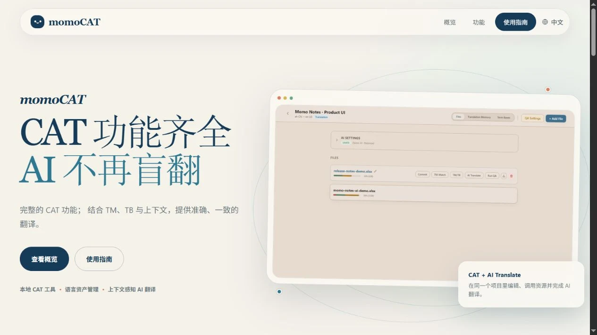
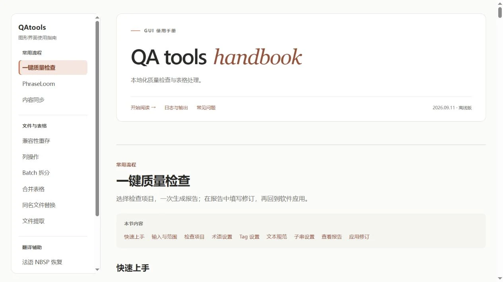

01 / 03TRANSLATION WORKSPACE

打开项目 ↗momoCAT.
桌面工具让 AI 理解翻译的上下文。将 CAT 编辑、翻译记忆库、术语库与 AI 翻译放进同一个工作站，从初翻到审校，一路衔接。
查看项目DEVELOPER / LOCALIZATION
写代码，连接语言。
为翻译、本地化和日常工作，做一些顺手的工具。

打开项目 ↗让 AI 理解翻译的上下文。将 CAT 编辑、翻译记忆库、术语库与 AI 翻译放进同一个工作站，从初翻到审校，一路衔接。
查看项目
打开项目 ↗把重复的检查交给工具。覆盖术语、占位符与译文一致性检查，串起表格整理、内容同步和修订回填，让交付更从容。
查看项目打开浏览器，解决手边的小问题。将标签检查与文本比较集中到一个工作台，支持 Excel / CSV 导入，内容在浏览器本地处理。
打开工具Less friction.
More possibility.
我关注语言、技术，以及它们相遇的地方。
这些项目来自本地化工作中的实际需求：让翻译多一点上下文，让检查少一点重复，让常用操作更简单。我把这些想法写成代码，做成自己也愿意每天使用的工具。